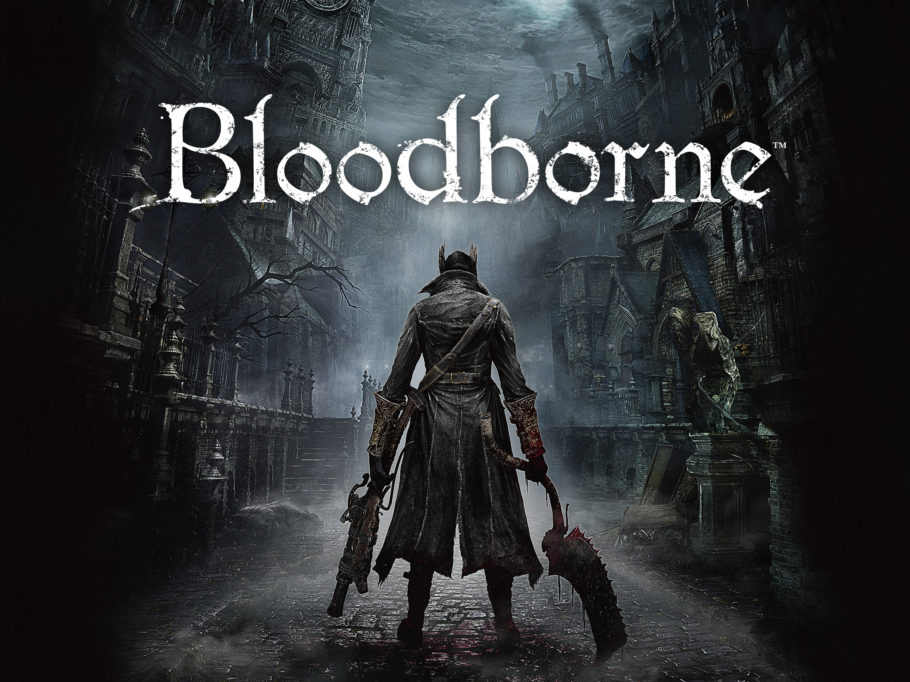

MENU PRINCIPAL
As Platinas mais Difíceis do PlayStation
Aqui está a lista de Platinas mais Difíceis do Playstation, então sente-se, pegue o seu controle e vamos para a ação (Lembrando que elas não estão em ordem de dificuldade).
1. Devil My Cry 5

Devil My Cry 5 é o quinto jogo da série Devil My Cry, a dificuldade de sua platina é considerada por muitos como impossível. Alguns troféus desse jogo podem ser facilmente adquiridos durante a sua progressão no modo história, outros são muito mais complexos, como o ligado ao modo Hell and Hell, no qual o personagem morre com apenas um golpe e os inimigos são incrivelmente mais fortes.
Mas o problema de verdade é porque nenhuma de suas fases possui checkpoint e para a platina é preciso conseguir rank S em todos os níveis nesse modo , exigindo muita paciência e habilidade dos jogadores, e ganhando facilmente seu espaço nessa lista. Esse jogo tem a dificuldade de platina de 95/100
3. Bloodborne

Bloodborne é mais um jogo da saga Soulslike, conhecida por ter uma platina que demanda muito tempo, dedicação e perseverança. Com Bloodborne não é diferente, este jogo é considerado por muitos como um dos mais difíceis da saga pois, para terminá-lo já pode ser uma tarefa muito difícil.
Para conseguir a platina deste jogaço é preciso pegar todas as armas, zerar com os três finais disponíveis, derrotar vários bosses e sem contar as DLC's que possuem troféus necessários para platinar. Bloodborne tem a dificuldade de platina de 69/100
5. Star Ocean: The Last Hope

Star Ocean: The Last Hope possui um gameplay longo, exigindo que os jogadores dediquem de 450 a 1.000 horas para a platina.
Para conseguir a platina é preciso concluir o game em cinco dificuldades diferentes, pegando todos os colecionáveis, caso contrário, será preciso recomeçar tudo novamente paraconseguir o troféu. Esse jogo tem a dificuldade de platina de 100/100.
7. Crypt Of The NecroDancer
Sendo considerado um jogo muito difícil, é claro que platinar Crypt of The Necrodancer não seria uma tarefa simples. Um de seus troféus, "Lowest of thelow" , exige zerar o jogo nove vezes seguidas, uma com cada personagem disponível, sem pegar um único item pelo caminho.
Ou seja, nada de melhorias de armas, aumentos de dano ou formas de recuperar a vida, o que torna até o menor dos erros em uma possível armadilha fatal, e pode resultar em cerca de nada menos que cerca de 900 horas para alcançar o troféu! Esse jogo tem a dificuldade de platina de 100/100.
9. Diablo II: Resurrected

Diablo II é outro jogo considerado difícil de platinar, mas dessa vez não tanto pela dificuldade, mas sim pelo nível de comprometimento exigido. Como ele tem uma base de jogadores bem mais vasta do que Crypt of the Necrodancer, a porcentagem de pessoas que conseguiram esse feito é ainda menor, de apenas 0,02%.
Para conseguir a platina em Diablo II é preciso concluir o jogo na dificuldade mais alta com cada classe, o que significa realizar pelo menos 21 jogadas completas, cada uma demandando em média cerca de 30 horas. E isso não é tudo, ainda é preciso citar a verdadeira pedra no caminho. Esse jogo tem a dificulade de platina de 98/100.

2. Crash Bandicoot 4: It's About Time

Crash Bandicoot 4 é um dos jogos considerados mais difíceis de platinar, tendo uma dificuldade altíssima de platina de 95/100.Por que 95 de dificuldade? porque jogo é preciso passar por fases longas e repletas de colecionáveis, que a qualquer falta bde cuidado é preciso recomeçá-la tudo do zero. Além dos níveis ainda possuírem tempo.
4. Shenmue 3

Assim como nos outros jogos da série, Shenmue 3 oferece diversas atividades paralelas para os jogadores aproveitarem, como curtir bons momentos no arcade ou outros minigames. Porém, suas novas tarefas, pescar e coletar ervas, podem se provar extremamente cansativas, principalmente para quem quiser platinar o título. Este jogo tem uma dificuldade de 84/100
h26. Ninja Gaiden Sigma 2

Ninja Gaideen Sigma 2, é mais um jogo com uma platina muito difícil: você deve zerá-lo 7 vezes e completar 35 missões online, o que parece ser fácil, mas não é, pois além de exigir muita habilidadedo jogador, ainda é precise ter sorte para cair com um player bom. sua dificuldade de platina é de 98/100.
8. Street Fighter V
Street Fighter V é o quinto jogo da série Street Fighter, com uma platina considerada por muitos como impossível, pois para platiná-lo é preciso entra para a Golden League, a divisão mais alta do modo ranqueado, o que significa alcançar um nível excepcional de habilidade para superar adversários igualmente habilidosos.
É preciso também acumular 1.000.000 de moedas, o que não é fácil. A verdadeira prova de maestria surge ao completar o jogo na dificuldade Hell, um desafio que aumenta consideravelmente a intensidade e a complexidade do jogo. Além disso, vencer 300 partidas ranqueadas é um feito que requer não apenas habilidade técnica, mas também um entendimento mais profundo das nuances do combate. Esse jogo tem a dificuldade de platina de 98/100.
10. Super Meat Boy
Super Meat Boy é considerado um dos melhores jogos de indie e/ou de plataforma já criados, com controles extremamente responsivos, uma ótima trilha sonora e uma dificuldade desafiadora.
Entre diversas conquistas extremamente difíceis, a mais complexa envolve vencer os 20 níveis do mundo final, Cotton Alley, em sua variante Dark World sem morrer uma única vez. Esse jogo tem a dificuldade de 100/100.